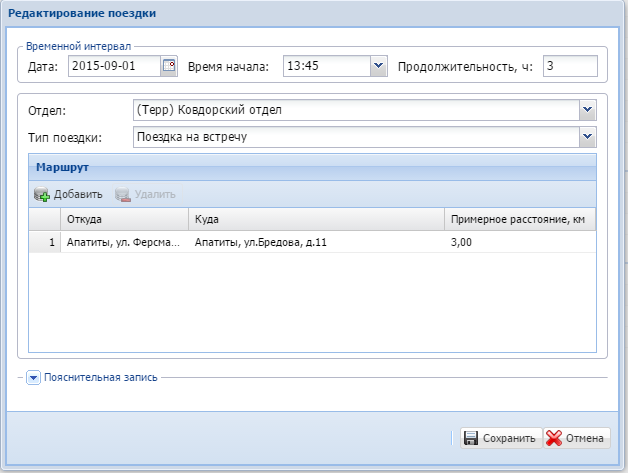
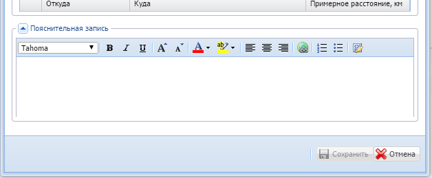
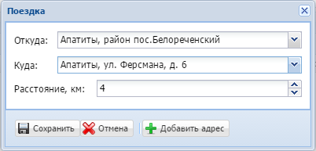
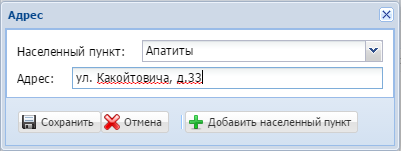
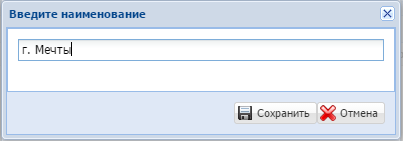
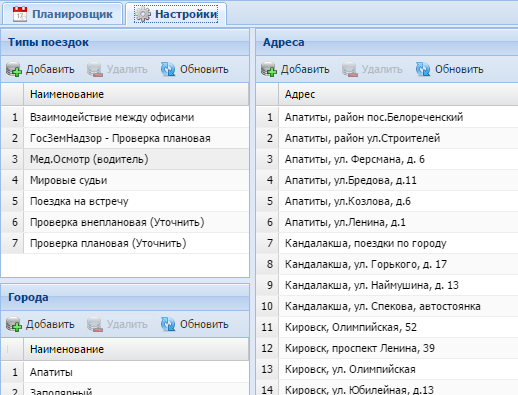

1. Оператор (любой сотрудник Управления) создаёт в "Редакторе поездок" новую поездку, где указывает все необходимые данные.
2. При необходимости отдел АХО может её скорректировать. При этом необходимо обязательно предупредить сотрудника, который создал данную поездку или начальника соответствующего отдела о всех произведённых корректировках.
3. После завершения поездки необходимо отметить, что она состоялась. Если поездка была отменена, то ее можно удалить.
В планировщике имеется панель инструментов, которая содержит: (3)"Редактор", позволяющий добавлять и удалять поездки. (4)"Навигатор", позволяющий переключать текущий вид планировщика на соответствующую неделю. (5)"Отчеты", позволяет вывести форму для распечатки отображаемой недели.

Практически все поля являются обязательными. Необязательным полем является только "Пояснительная запись".

При добавлении маршрута происходит автоматическая подстановка расстояния между объектами. Данное расстояние берется из последней ранее введённой записи аналогичного марщрута. Хотя вы можете вписывать здесь конкретное расстояние. По каждой поездке данное значение индивидуально.

Если какой-либо адрес отсутствует в списке его можно добавить, нажав соответсвующую кнопку.
Появится окно добавления адреса:

Если отсутствует в списке населенный пункт, то его можно так же добавить:

Тем самым автоматически формируется предыдущий список.
Все списки можно исправлять, если зайти в закладку "Настройки":
